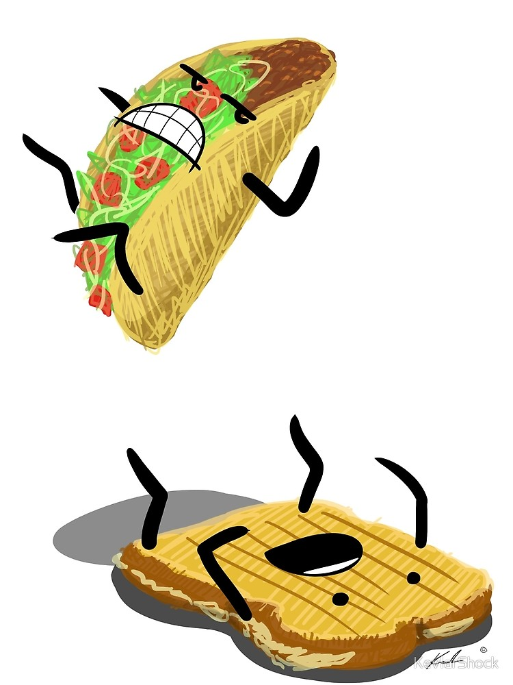

Taco has filling in between just as a sandwich does

No! It is not a sandwich..
There's no bread
Sandwich is a bunch of ingredients between 2 things (bread slices). Taco shell is only 1 thing.
A taco is sideways orientated
Like asking "Is cereal soup?"
"A taco is not a sandwich. The sandwich is a culinary tool of Western European colonialism. The taco is a triumph for the Mexican working class." -Zach Carter
"Not for nothing, but I think the taco probably came first... so is the sandwich a taco?" -Sujata Mitra
A taco and sandwich aren’t related. The U.S. Department of Agriculture defines a sandwich as “meat between two slices of bread”. Merriam-Webster’s definition of sandwich: two pieces of bread with something (such as meat, peanut butter, etc.) between them...So nope! A taco is a taco.
Fun Facts About Our Beloved Coffee:
Shepherds discovered coffee in Ethiopia 800 A.D.
Legend has it that 9th century goat herders noticed the effect caffeine had on their goats, who appeared to "dance" after eating coffee berries. A local monk then made a drink with coffee berries and found that it kept him awake at night, thus the original cup of coffee was born.
Coffee is the 2nd most traded commodity on earth. The number one commodity? Oil.
There are 2 types of coffee beans: Arabica and Robusta.
70% of coffee beans are Arabica. Although less popular, Robusta is slightly more bitter and has twice as much caffeine.
Coffee was originally a food.
Coffee berries were mixed with fat to create an energy-rich snack ball. It was also consumed as a wine when made from the pulp of coffee berries.
Coffee is actually a fruit.
Coffee beans as we know them are actually the pits of a cherry-like berry that are grown on bushes. Even though coffee is actually a seed, it's called a bean because of its resemblance to actual beans.
You can overdose on coffee.
However, you would need to drink over 100 cups to consume the lethal dose of caffeine.
Coffee has health benefits.Coffee drinkers have a lower risk of Alzheimer's disease.
Researchers found that older patients with high levels of caffeine in their blood were more likely to avoid Alzheimer's. Studies have also shown that caffeine has positive effects on type 2 diabetes and Parkinson's disease. It has also been shown to protect against skin cancer in women.
Just smelling coffee can wake you up.
A group of scientists reported that simply inhaling the aroma of coffee can alter the activity of some genes in the brain, reducing the effects of sleep deprivation. And when you do drink that cup of coffee, caffeine reaches your blood fast, like 10 minutes fast.
Decaf actually does have caffeine.
An eight ounce brewed cup of decaf coffee actually has two-to-12 milligrams of caffeine. In comparison, a regular cup of coffee has anywhere from 95 to 200 milligrams. (Twelve ounces of coke only has 23-35 milligrams of caffeine.)
Dark roast coffees have less caffeine than lighter roasts.
Even though the flavor is often stronger, roasting actually burns off some of the caffeine.